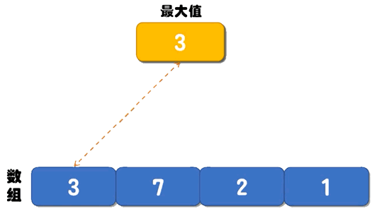

找数组的最大值和最小值
程序中，我们经常使用数组（列表）存储给定的线性序列（例如 {1,2,3,4}），那么如何查找数组（序列）中的最大值或者最小值呢？
查找数组（序列）中最大值或最小值的算法有很多，接下来我们以 {3,7,2,1} 序列为例讲解两种查找最值的算法，一种是普通算法，另一种是借助分治算法解决。
下面的动画，演示了找最大值的过程：

图 2 分治算法找最大值
分治算法的实现思路是：不断地等分数组中的元素，直至各个分组中元素的个数 ≤2。由于每个分组内的元素最多有 2 个，很容易就可以找出其中的最值（最大值或最小值），然后这些最值再进行两两比较，最终找到的最值就是整个数组中的最值。
如图 2 所示，借助“分而治之”的思想，我们将“找 {3, 7, 2, 1} 中最值”的问题转换成了：先找出 {3 , 7]、[2 , 1} 中各自的最值，找出的最值再进行两两比较，最终就可以找到整个数组中的最值。
如下是分治算法求数组中最大值的伪代码：
分治算法实现“求数组中最大值”的 C 语言程序如下：
分治算法实现“求数组中最大值”的 Java 程序如下：
分治算法实现“求数组中最大值”的 Python 程序如下：
以上程序的输出结果均为：
查找数组（序列）中最大值或最小值的算法有很多，接下来我们以 {3,7,2,1} 序列为例讲解两种查找最值的算法，一种是普通算法，另一种是借助分治算法解决。
普通算法
普通算法的解决思路是：创建两个变量 max 和 min 分别记录数组中的最大值和最小值，它们的初始值都是数组中的第一个数字。从第 2 个数字开始遍历数组，每遇到一个比 max 大的数字，就将它存储到 max 变量中；每遇到一个比 min 小的数字，就将它存储到 min 变量中。直到遍历完整个数组，max 记录的就是数组中的最大值，min 记录的就是数组中的最小值。下面的动画，演示了找最大值的过程：

图 1 数组中找最大值的过程
图 1 数组中找最大值的过程
如下是普通算法对应的伪代码：找最小值的过程和图 1 类似，这里不再给出具体的动画演示。
输入 num[1...n] // 输入 n 个数字
max <- num[1] // 将第 1 个数字赋值给 max（表示最大值）
min <- num[1] // 将第 1 个数字赋值给 min（表示最小值）
for i <- 2 to n: // 从第 2 个数字开始遍历
if num[i] > max: // 如果 max 小于遍历到的数字，则更新 max 的值
max <- num[i]
if num[i] < min: // 如果 min 小于遍历到的数字，则更新 min 的值
min <- num[i]
Print max , min // 输出 max 和 min 的值
实现过程非常简单，感兴趣的读者可以自行编写对应的 C、Java 或者 Python 代码。
分治算法
下图展示了用分治算法查找 {3, 7, 2, 1} 中最大值的实现过程：图 2 分治算法找最大值
分治算法的实现思路是：不断地等分数组中的元素，直至各个分组中元素的个数 ≤2。由于每个分组内的元素最多有 2 个，很容易就可以找出其中的最值（最大值或最小值），然后这些最值再进行两两比较，最终找到的最值就是整个数组中的最值。
如图 2 所示，借助“分而治之”的思想，我们将“找 {3, 7, 2, 1} 中最值”的问题转换成了：先找出 {3 , 7]、[2 , 1} 中各自的最值，找出的最值再进行两两比较，最终就可以找到整个数组中的最值。
如下是分治算法求数组中最大值的伪代码：
输入 arr[1...n] // 输入 n 个数字
arr_max(x , y) : // 设计一个递归函数，[x , y] 用来限定查找最大数的范围
if y-x ≤ 1 : // 如果 y-x 的值小于等于 1，则比较 arr[x] 和 arr[y] 的值，大的就是最大值
return max(arr[x] , arr[y])
else :
// 将 [x , y] 区域划分为 [x , ⌊(x+y)/2⌋ ] 和 [ ⌊(x+y)/2+1⌋ , y] 两个区域，求出两个区域内各自的最大值
max1 = arr_max(x , ⌊(x+y)/2⌋ )
max2 = arr_max( ⌊(x+y)/2+1⌋ , y)
return max(max1 , max2) // 比较两个区域的最大值，最终找出 [x , y] 中的最大值
分治算法实现“求数组中最大值”的 C 语言程序如下：
#include <stdio.h>
//自定义函数，其中 [left,right] 表示 arr 数组中查找最大值的范围
int get_max(int* arr, int left, int right) {
int max_left = 0, max_right = 0, middle = 0;
//如果数组不存在
if (arr == NULL) {
return -1;
}
//如果查找范围中仅有一个数字
if (right - left == 0) {
return arr[left];
}
//如果查找范围中有 2 个数字，直接比较即可
if (right - left <= 1) {
if (arr[left] >= arr[right]) {
return arr[left];
}
return arr[right];
}
//等量划分成 2 个区域
middle = (right - left) / 2 + left;
//得到左侧区域中的最大值
max_left = get_max(arr, left, middle);
//得到右侧区域中的最大值
max_right = get_max(arr, middle + 1, right);
//比较左、右两侧的最大值，找到 [left,right] 整个区域的最大值
if (max_left >= max_right) {
return max_left;
}
else {
return max_right;
}
}
int main() {
int arr[4] = { 3,7,2,1 };
int max = get_max(arr, 0, 3);
printf("最大值：%d", max);
return 0;
}
分治算法实现“求数组中最大值”的 Java 程序如下：
public class Demo {
public static int get_max(int [] arr,int left,int right) {
//如果数组不存在或者数组内没有元素
if (arr == null || arr.length == 0) {
return -1;
}
//如果查找范围中仅有 2 个数字，则直接比较即可
if(right - left <=1) {
if(arr[left] >= arr[right]) {
return arr[left];
}
return arr[right];
}
//等量划分成 2 个区域
int middle = (right-left)/2 + left;
int max_left = get_max(arr,left,middle);
int max_right = get_max(arr,middle+1,right);
if(max_left >= max_right) {
return max_left;
}else {
return max_right;
}
}
public static void main(String[] args) {
int [] arr = new int[] { 3,7,2,1 };
int max = get_max(arr,0,3);
System.out.println("最大值："+max);
}
}
分治算法实现“求数组中最大值”的 Python 程序如下：
def get_max(arr,left,right):
#列表中没有数据
if len(arr) == 0:
return -1
#如果查找范围中仅有 2 个数字，则直接比较即可
if right - left <= 1:
if arr[left] >= arr[right]:
return arr[left]
return arr[right]
#等量划分成 2 个区域
middle = int((right-left)/2 + left)
max_left = get_max(arr,left,middle)
max_right = get_max(arr,middle+1,right)
if max_left >= max_right:
return max_left
else:
return max_right
arr = [3,7,2,1]
max = get_max(arr,0,3)
print("最大值：",max,sep='')
以上程序的输出结果均为：
最大值：7
您可以根据伪代码和给出的找数组中最大值的程序，自行编写出找数组中最小值的程序，这里不再过多赘述。
关注公众号「站长严长生」，在手机上阅读所有教程，随时随地都能学习。本公众号由C语言中文网站长亲自运营，长期更新，坚持原创。

微信扫码关注公众号